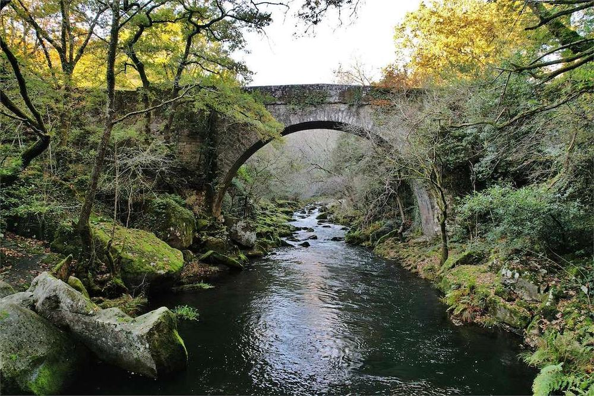
Caminar
Seis etapas entre bosques, aldeas y puentes medievales. Nosotros nos ocupamos de tu maleta.
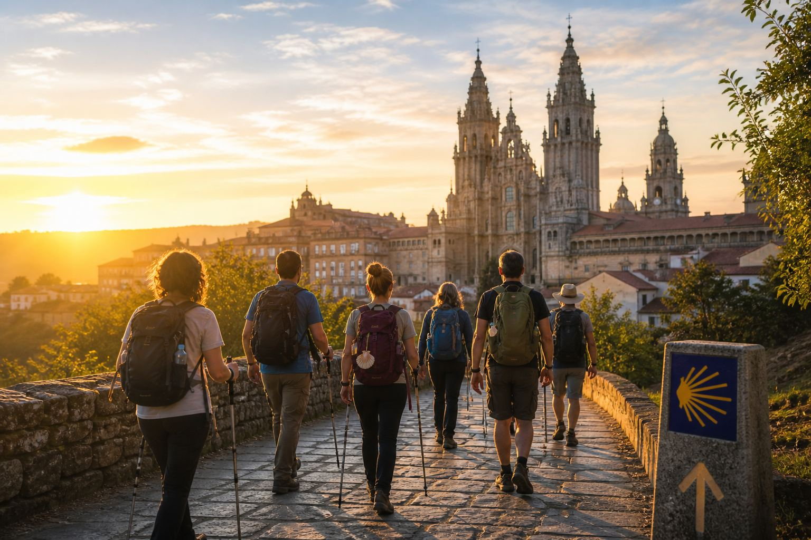
Evermind × Club eXpats
Caminar, compartir y tener tiempo para ti.
Un grupo pequeño, 116 km por la Galicia rural y la tranquilidad de tenerlo todo resuelto: alojamientos, maletas y organización. Tú caminas; del resto nos ocupamos nosotros.
Para quién
Para personas que quieren vivir el Camino con calma, en buena compañía y con todo organizado. Para grupos o de forma individual. No hace falta ser del Club eXpats.
Unos días lejos de la rutina para pensar, respirar y escucharte.
Conversaciones y momentos compartidos.
Caminar entre bosques y aldeas: cuerpo activo, mente tranquila y buen descanso.
Llegar juntos a la Plaza del Obradoiro será parte de nuestra historia.
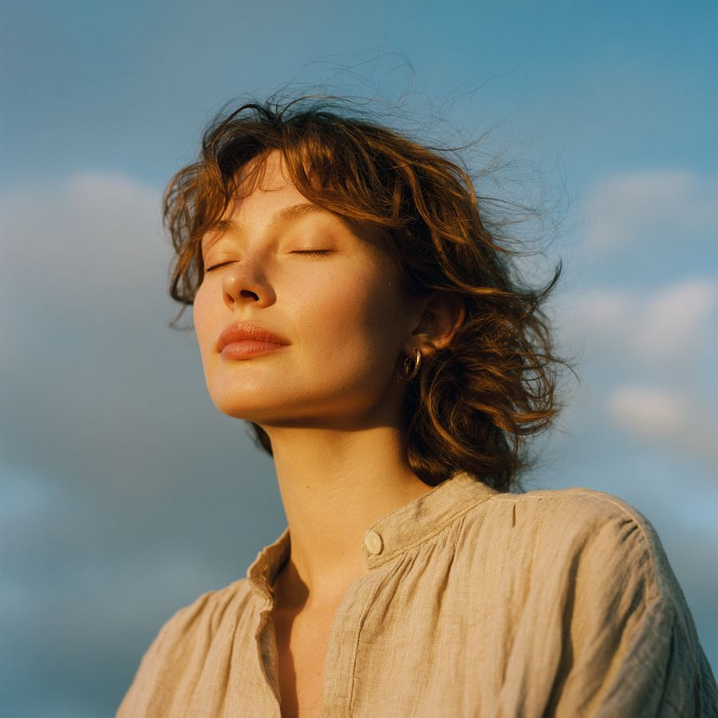
La experiencia

Seis etapas entre bosques, aldeas y puentes medievales. Nosotros nos ocupamos de tu maleta.
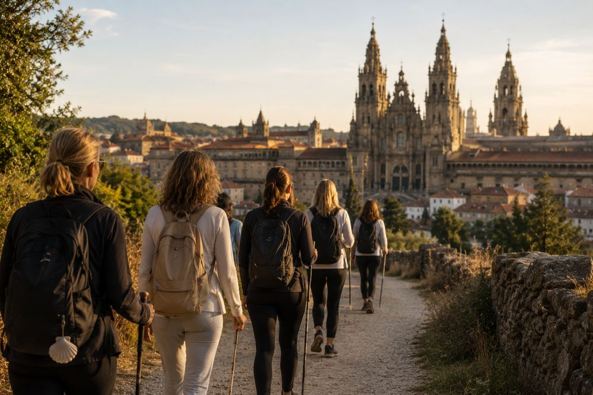
Momentos guiados por Evermind y el cuaderno del Camino para pensar, escribir y conversar.
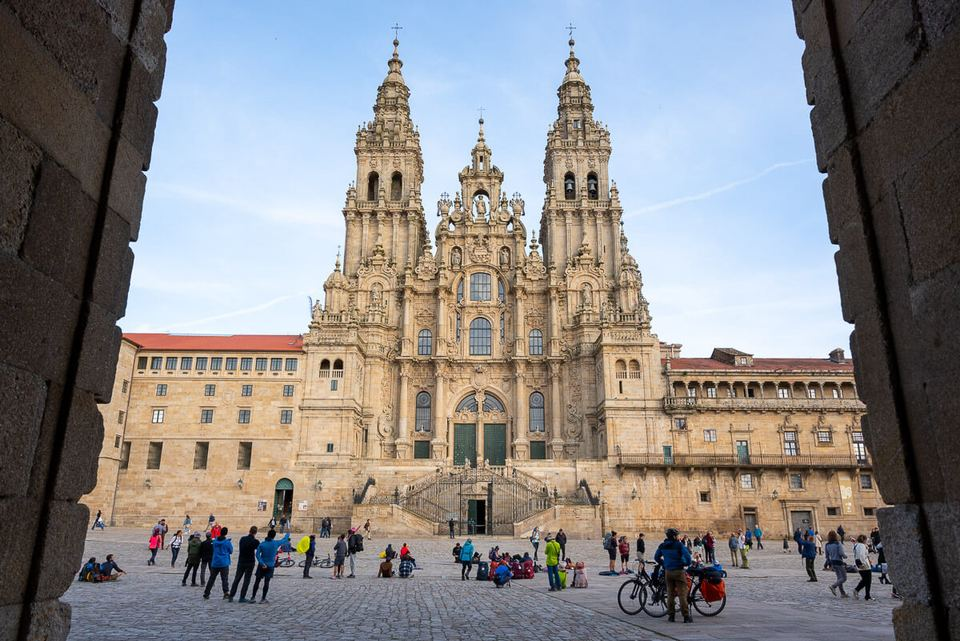
Experiencia gastronómica y cultural. Cena de bienvenida en Sarria y cena de despedida en Santiago, con el Camino ya hecho.
De martes a martes: llegada, seis etapas a pie y despedida en Santiago. Toca una parada del mapa para ir a ese día.
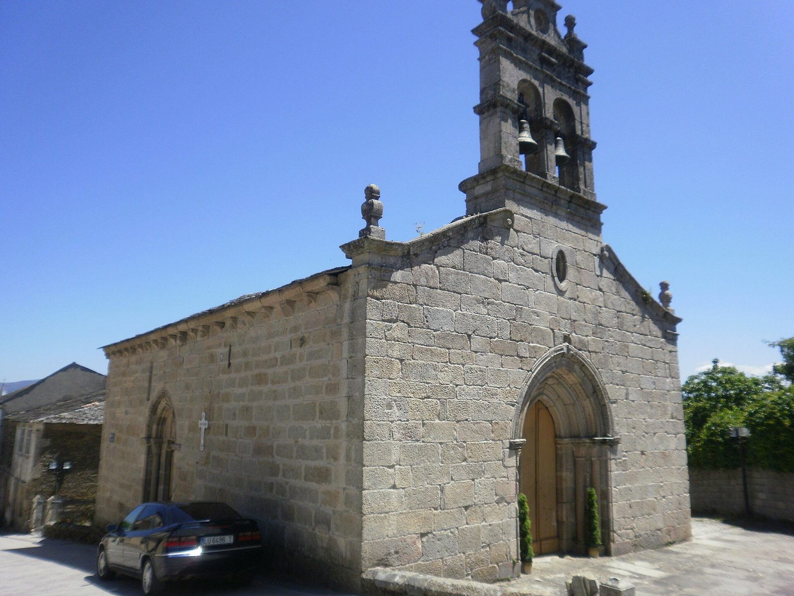
Día 1 · Martes 8 de junio
Bienvenida y cena de grupo
Aquí empieza todo. Sarria es el punto de partida de miles de peregrinos por estar justo antes de los últimos 100 km. Su casco antiguo sube en cuesta por la Rúa Maior, con iglesias medievales y el convento de la Magdalena. Por la noche, cena de bienvenida para conocernos.
Dormimos en: Hotel 4* en Sarria
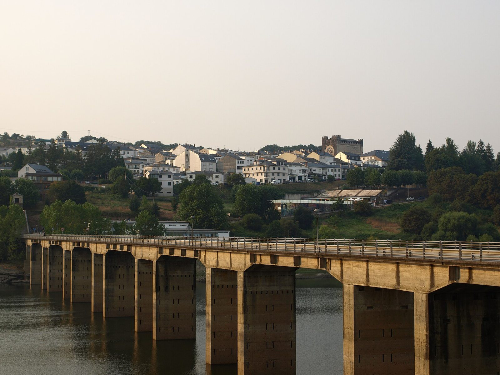
Día 2 · Miércoles 9 de junio
22,8 km · faltan 94 km a Santiago
Un pueblo trasladado piedra a piedra en los años sesenta, cuando el embalse de Belesar cubrió el antiguo. Se llega cruzando un largo puente sobre el Miño. A mitad de etapa pasarás junto al mojón del kilómetro 100.
Dormimos en: Hotel 3* en Portomarín
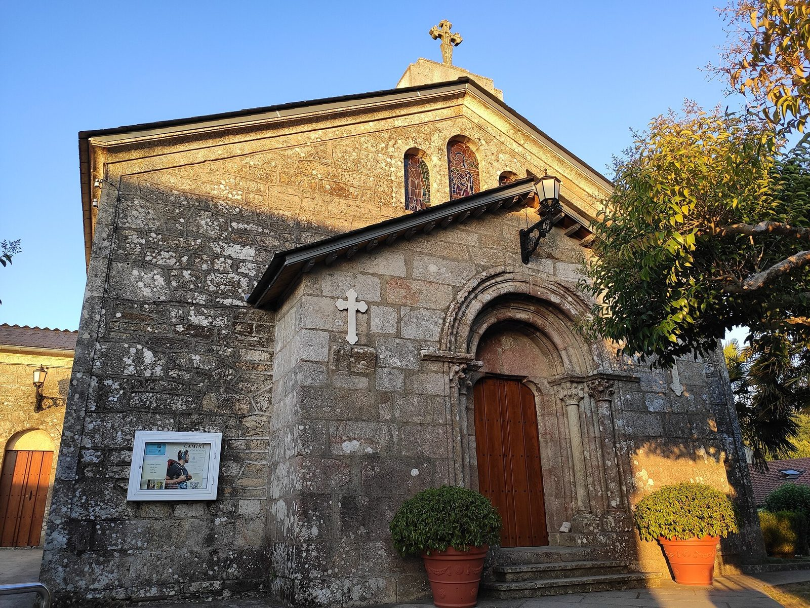
Día 3 · Jueves 10 de junio
25 km · la etapa más larga
La etapa más larga del viaje y también una de las más rurales: prados, robles y aldeas donde el tiempo va más despacio. Palas de Rei debe su nombre, según la tradición, a un antiguo palacio real.
Dormimos en: Casa rural en las afueras, con traslado
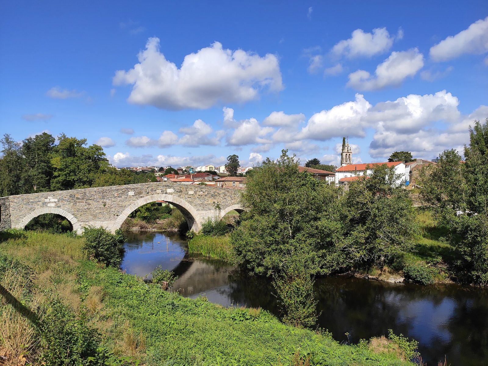
Día 4 · Viernes 11 de junio
15,2 km · faltan 53 km
Aquí el Camino Primitivo se une al Francés. Antes de llegar cruzarás el puente medieval de Furelos. Melide es famoso en toda Galicia por su pulpo á feira.
Dormimos en: Hotel 3* en Melide
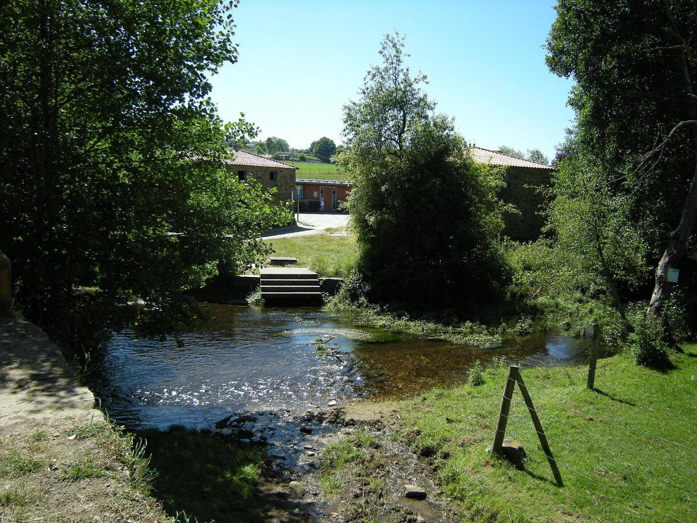
Día 5 · Sábado 12 de junio
14,3 km · faltan 39 km
Una etapa corta entre bosques y valles de río, como el de Ribadiso, con su puente y su albergue de piedra. Arzúa es tierra de queso: el Arzúa-Ulloa tiene denominación de origen. Aquí se suma el Camino del Norte.
Dormimos en: Pazo rural en las afueras, con traslado
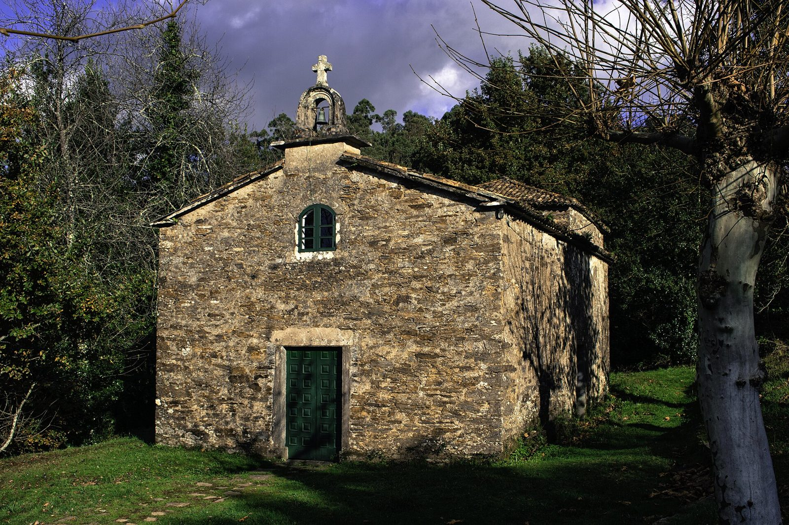
Día 6 · Domingo 13 de junio
19,2 km · faltan 20 km
Caminos entre robles y eucaliptos y pequeñas capillas como la de Santa Irene, ya en el municipio de O Pino. Es la última noche antes de Santiago: se nota el ambiente de víspera.
Dormimos en: Pazo y casa rural cercanos, con traslado
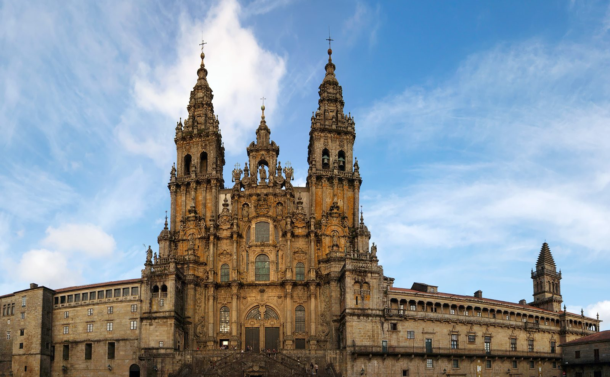
Día 7 · Lunes 14 de junio
19,9 km · llegada a la Catedral
Desde el Monte do Gozo se ven por primera vez las torres de la Catedral. Después, la llegada a la Plaza del Obradoiro y la Compostela en la Oficina del Peregrino. Por la noche, cena de despedida, con el Camino ya hecho.
Dormimos en: Hotel 4* en el centro de Santiago
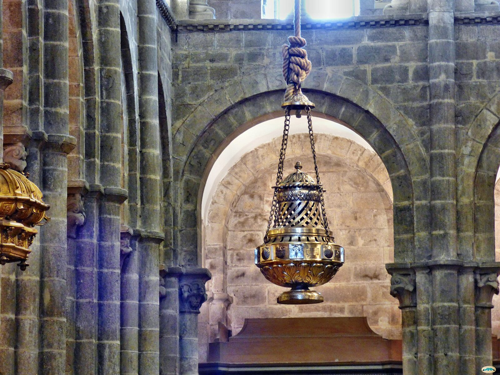
Día 8 · Martes 15 de junio
Desayuno, cierre del grupo y despedida
Último desayuno juntas y un rato para cerrar el viaje en grupo. Después, cada una sigue su camino. Si quieres quedarte unos días más en Santiago, te ayudamos a organizarlo.
Fin del viaje · Buen Camino
Habitación individual con baño privado y desayuno (si prefieres compartir, te damos el precio en doble). El grupo duerme junto casi todas las noches; si el alojamiento está fuera del pueblo, el traslado está incluido.
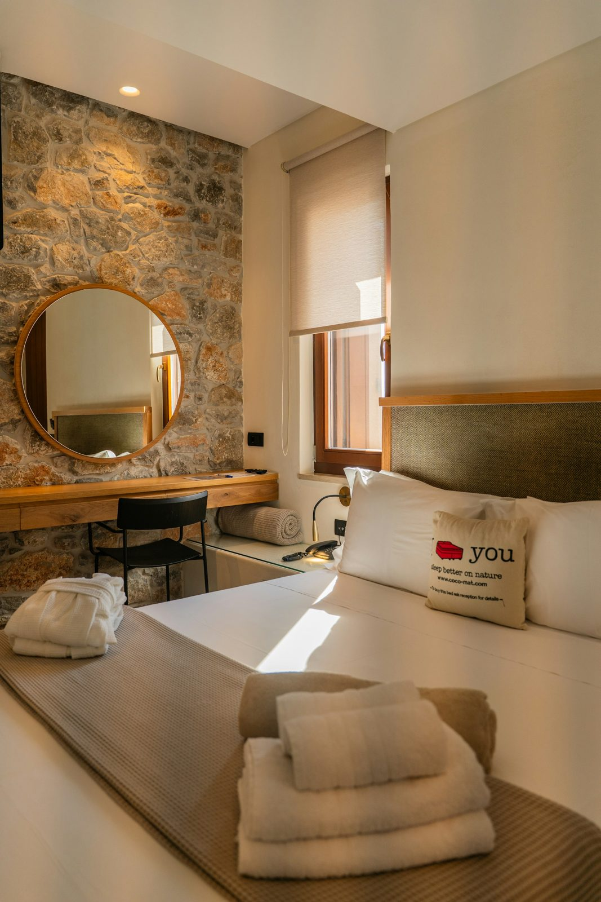
En el centro de Sarria, Portomarín, Melide y Santiago, a pie de Camino.
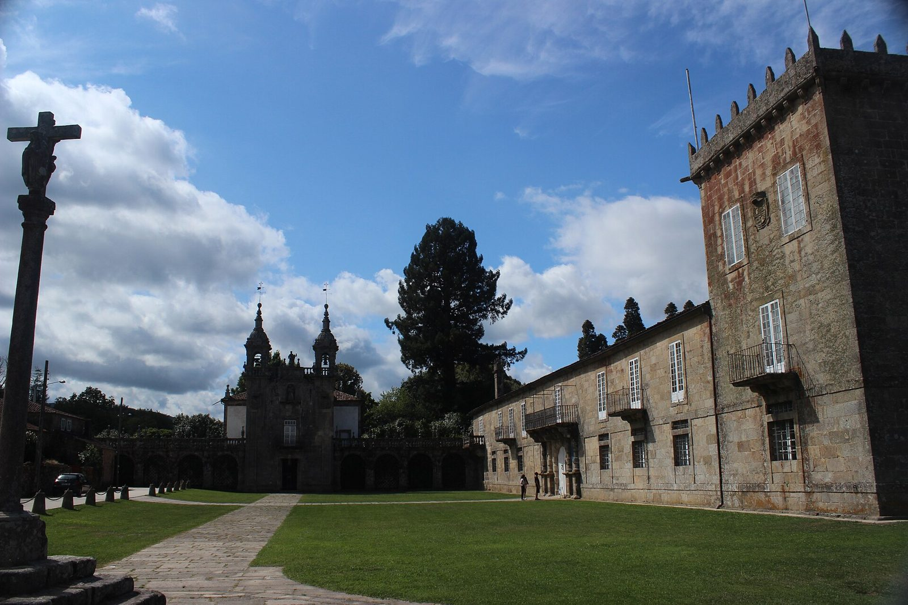
Casas señoriales de piedra en el campo, con jardín y mucha historia. Dos noches, cerca de Arzúa y O Pedrouzo.
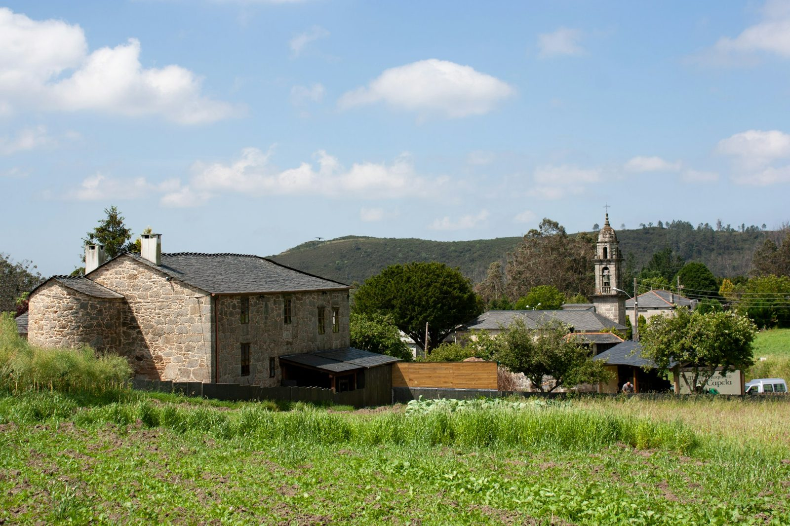
Alojamientos pequeños y cuidados en aldeas tranquilas, para dormir de verdad.
Tipo de alojamiento orientativo. Los alojamientos concretos los confirma Viajes Mundiplus, agencia oficial del Camino, al cerrar el grupo.
Cómo te acompañamos
Una conversación contigo, a solas, para entender qué buscas. Después, el dossier de preparación y una sesión de grupo para resolver las últimas dudas.
Una persona de confianza acompaña al grupo todo el viaje. Tu cuaderno Evermind trae preguntas para cada etapa y hay algunas conversaciones en grupo, sin obligación.
Un cierre en Santiago y un reencuentro opcional online semanas después. Cuando caminas con una pregunta y bien acompañada, las respuestas llegan.
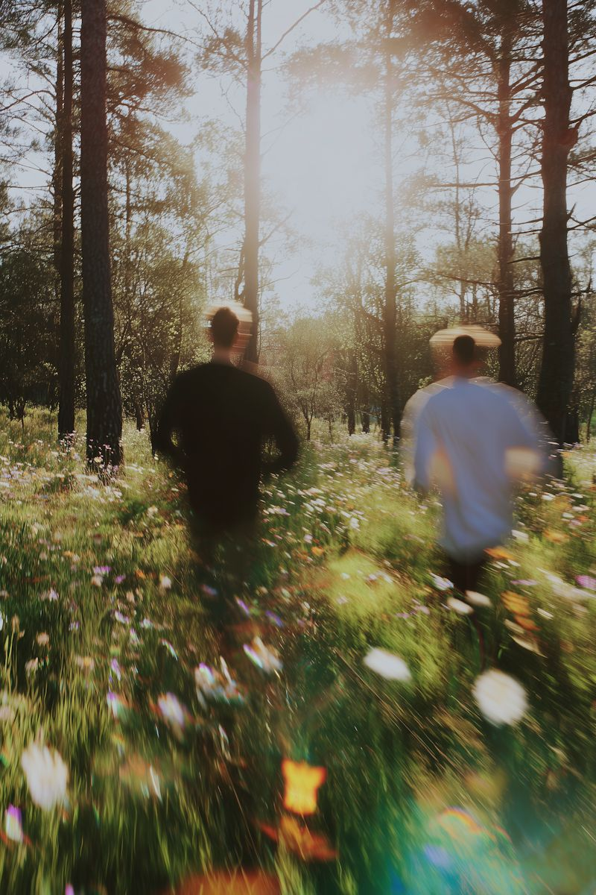
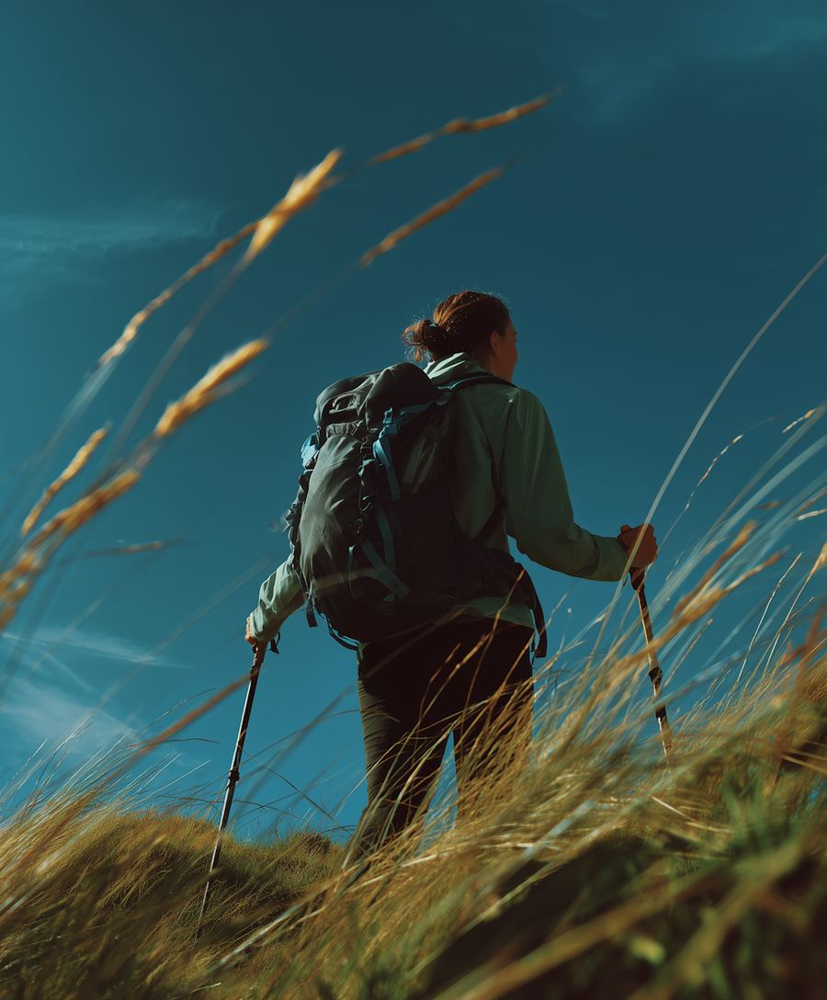
No hace falta ser deportista. Con unas semanas de paseos y el equipo adecuado, el Camino se disfruta. Te mandamos una guía más completa antes de salir.
Tu lista personal: márcala desde tu móvil mientras haces la maleta. Solo la ves tú y se guarda en tu dispositivo.
¿No encuentras tu pregunta? Escríbenos por WhatsApp o a info@evermindconsulting.com y te respondemos.
Pago seguro con tarjeta. Te pedimos tu nombre, email, teléfono y tipo de habitación, y que aceptes las condiciones de abajo. Recibes la confirmación por email y te escribimos para agendar la conversación. ¿Dudas? Escríbeme por WhatsApp al +1 781 428 0026.
El Camino de Santiago · Edición Club eXpats, del martes 8 al martes 15 de junio de 2027 (8 días y 7 noches), de Sarria a Santiago de Compostela, con los servicios de «Qué incluye». Evermind diseña la experiencia y acompaña al grupo. La logística (alojamientos, traslado de maletas, asistencia en ruta y seguro de asistencia) la opera Viajes Mundiplus, agencia de viajes con licencia CICMA 2620.
Desde 2.750 € por persona en habitación individual con baño. El precio en habitación doble se da a petición. Los precios son en euros; si pagas desde otra moneda, el cambio y las comisiones de tu banco van a tu cargo. Reserva de plaza: 500 € al apuntarte, que se descuentan del total. Resto: antes del 10 de marzo de 2027, por transferencia bancaria o con tarjeta.
El viaje sale con un mínimo de 10 y un máximo de 12 personas. Las reservas se aceptan hasta el 31 de enero de 2027 o hasta completar las plazas.
Hasta la confirmación del grupo (31 de enero de 2027): devolución íntegra de la reserva. Desde la confirmación del grupo: la reserva de 500 € no se devuelve. Desde el 10 de marzo de 2027: además de la reserva, se aplican los gastos de cancelación de alojamientos y servicios ya contratados, que te detallamos por escrito al confirmar el grupo. Recomendamos contratar un seguro de cancelación. Puedes ceder tu plaza a otra persona avisando con tiempo.
Si el viaje no puede salir por causas nuestras, te devolvemos el 100 % de lo pagado.
Los tipos de alojamiento son orientativos y se confirman al cerrar el grupo. Si alguno no está disponible, se sustituye por otro de categoría similar.
El viaje pide caminar entre 14 y 25 km al día durante seis días. Al reservar confirmas que puedes hacerlo; si tienes dudas, consúltalo con tu médico. Hay vehículo de asistencia si un día no puedes terminar una etapa.
Cada persona se ocupa de su pasaporte y, si le aplica, de la autorización de viaje para entrar en España.
Tus datos se usan solo para organizar el viaje y se comparten con Viajes Mundiplus para las reservas. Solo usamos fotos del grupo con tu permiso.
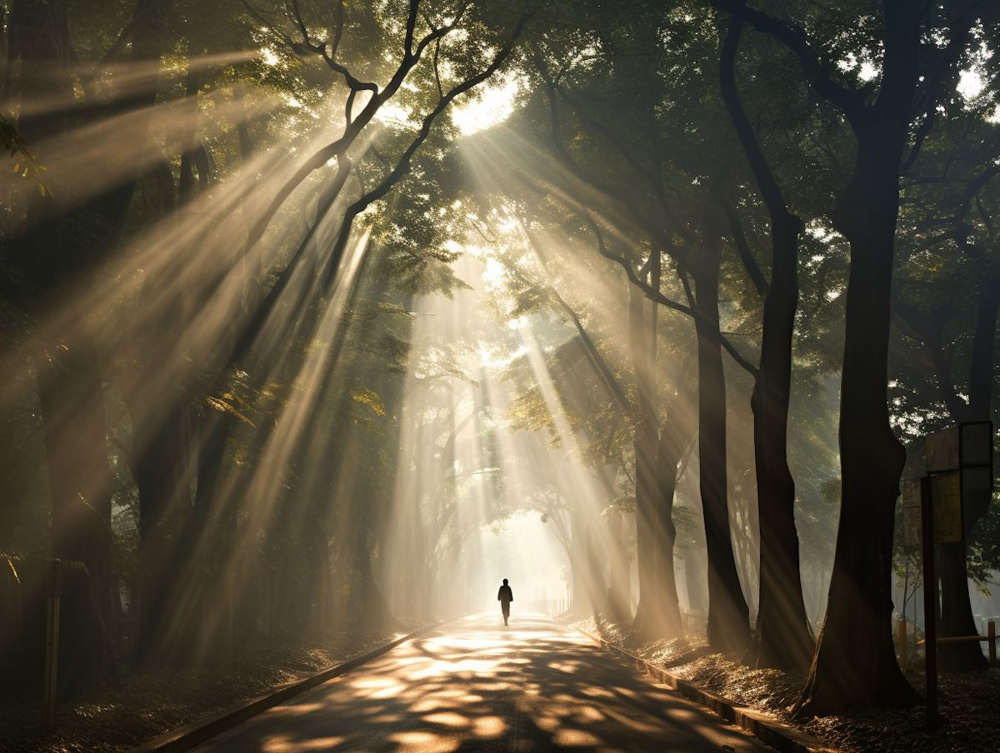
Un grupo de 10 a 12 personas, ocho días de junio y 116 km por delante.
Reserva tu plazaBuen Camino